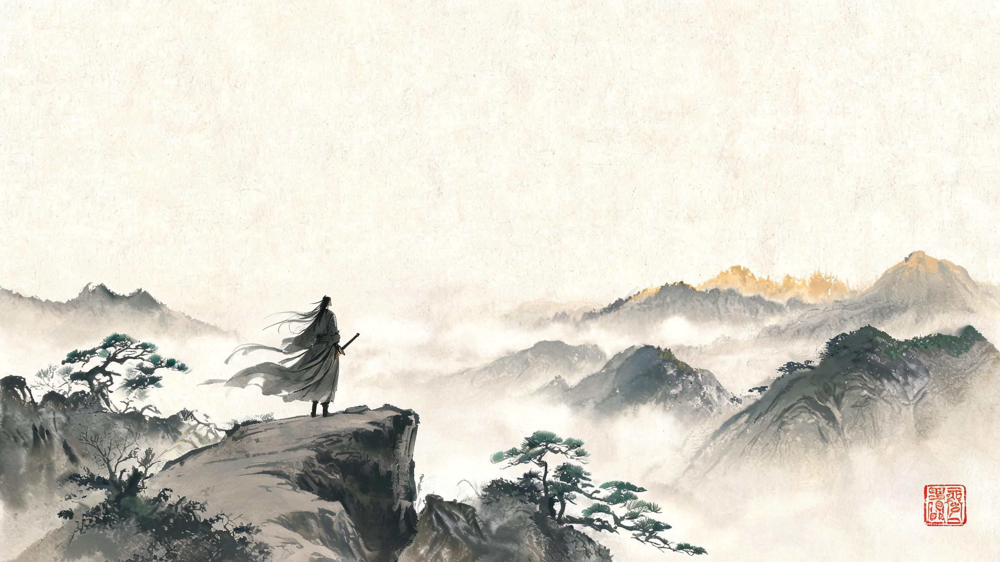

摘要 · 核心结论
这份参考把「大厂怎么做常驻UI」和「武侠水墨风怎么设计」两件事拆开讲清楚，最后落到你的 Godot 武侠 CRPG 项目上。先给结论：
大厂常驻UI设计方法论
1.1 什么是常驻UI
常驻UI（HUD，Heads-Up Display）是游戏进行中实时、不间断展示关键信息的界面层。它与背包、设置这类「中断式UI」的本质区别是：玩家没有停下来，所以HUD不能臃肿。[60] 大厂的核心思路可以概括为一句：最好的UI就是没有UI——玩家需要界面时界面自然出现，不需要时尽量减少遮挡。[8]
1.2 信息筛选：频率 × 紧急度矩阵
HUD上每个元素都要通过两个问题的拷问：玩家多久需要一次？多紧急？ 据此把信息分成四档，决定它是常驻、弱化、弹出还是收纳。[60]
P1 常驻·弱化
高频但低紧急：任务目标、小地图、金币。常驻但视觉弱化，不抢注意力。
P0 常驻·突出
高频且高紧急：战斗中HP、技能冷却、弹药。永久显示且最醒目。
P3 收纳进菜单
低频且低紧急：设置、背包、成就。收进菜单，需要时打开。
P2 临时弹出
低频但高紧急：受伤特效、任务完成提示、Boss预警。需要时弹出。
1.3 五层信息架构
大厂把游戏信息分成五个层级，按「是否常驻」从屏幕边缘到菜单逐层排布：[25]
- 常驻层：血条、小地图等随时需要看到的内容，保留在屏幕边缘。
- 触发层：点击互动才出现的内容，如任务目标提示、NPC对话。
- 独立层：打开菜单才显示的内容，如背包、角色、设置、成就。
- 世界交互层：绑定在场景元素上的信息，如任务标记、采集点、NPC标记。
- 隐匿层：不重要内容，需玩家主动调取才显示。
1.4 七大设计原则
进入游戏后的常驻功能界面清单
2.1 通用常驻元素清单
综合《最终幻想14》官方手册、《魔兽世界》HUD说明及多款大厂游戏，进入游戏后最常见的常驻界面元素及其功能如下：[74][75]
| 界面元素 | 功能 | 常驻方式 |
|---|---|---|
| 小地图 | 显示角色位置、地标、任务目标、敌人/盟友、传送点。 | 常驻·可隐藏 |
| 任务追踪器 | 当前追踪任务的目标与进度，点击可跳转指引。 | 常驻·可折叠 |
| 技能栏 | 技能/能力图标，显示冷却时间。 | 常驻·底部/侧边 |
| 状态栏 | HP、MP/内力、体力、等级、经验值。 | 常驻·左上/顶部 |
| 角色头像 | 角色识别，点击进入角色/心法/装备界面。 | 常驻 |
| 快捷栏 | 一键使用药品、道具、特殊功能。 | 常驻·底部中央 |
| 背包 | 物品管理、装备、消耗品。 | 面板/弹窗·非常驻 |
| 设置 | 音量、画质、控制键位。 | 弹窗·非常驻 |
| 聊天 | 消息列表（单机可省略或做成日志）。 | 侧边·可隐藏 |
| 社交 | 好友、宗门/帮派、组队（单机可省略）。 | 弹窗·非常驻 |
| 暂停菜单 | 保存、加载、设置入口。 | 弹窗·非常驻 |
| 活动/运营入口 | 限时玩法、福利、战令（单机可省略）。 | 右侧/顶部 |
2.2 大厂游戏对照表
六款代表性游戏的常驻UI元素位置对照（「—」表示该游戏无此常驻元素或资料不足）：
| UI元素 | 原神 | 王者荣耀 | 逆水寒手游 | 天涯明月刀端游 | 剑网3 | 燕云十六声移动端 |
|---|---|---|---|---|---|---|
| 小地图 | 左上[1] | 左上[3] | 左上[6] | 左上[9] | 左上[14] | 左上[16] |
| 任务/指引 | 左上[1] | 顶部[3] | 左上[6] | 小地图旁[9] | 左侧[14] | 指引区[18] |
| 血条/状态 | 顶部中央[1] | 顶部[3] | 角色状态区[6] | 底部角色信息[9] | 左侧[14] | 气血/真气[18] |
| 技能栏 | 底部[1] | 右下[5] | 右侧·可隐藏[6] | 底部+侧方[9] | 底部[14] | 右侧轮盘[17] |
| 聊天/社交 | 主菜单内[1] | 侧边/组队[3] | 组队/社交入口[6] | 底部[9] | 底部[14] | 左下[16] |
| 背包/装备 | 主菜单[1] | 侧边[3] | 主菜单[6] | 主菜单[9] | 左侧[14] | — |
| 活动入口 | 右侧[1] | 顶部[3] | 顶部[6] | 顶部[9] | 左侧[14] | 右上[16] |
| 设置/菜单 | 主菜单[1] | 侧边[3] | 主菜单[6] | 顶部[9] | 左侧[14] | — |
2.3 位置逻辑要点
常驻功能栏设计模式
3.1 四角布局
典型代表：原神、王者荣耀、剑网3。核心信息分布在屏幕四角，中间留给游戏画面；高频操作集中在拇指或鼠标常用区域。[1][12]
3.2 边框式布局
典型代表：天涯明月刀端游。所有功能沿屏幕四边排布，中间尽可能留白给场景画面。[11]
3.3 底部集中式布局
典型代表：移动端MOBA/武侠手游。拇指自然落在屏幕下方两侧，战斗操作可就近触发。[67][8]
3.4 折叠 / 隐藏 / 径向菜单
- 可折叠面板：剑网3的任务/队伍列表不用时可折叠，聊天栏也可折叠，保持界面清爽。[14]
- 自动隐藏：逆水寒手游非战斗状态下技能栏自动隐藏，点按普攻唤出。[6]
- 沉浸模式：逆水寒PC端提供「沉浸风格」动态情景式布局，动态隐藏非必要信息。[50]
- 径向菜单/轮盘：围绕中心点排列选项，适合战斗中选择技能/物品/武器，长按/右键/摇杆滑动触发；Steam手柄与动作游戏常用。[72][73]
3.5 移动端 vs PC 端差异
| 维度 | 移动端 | PC 端 |
|---|---|---|
| 输入方式 | 拇指触控，按钮需更大触控面积（≥44-48px）[69] | 鼠标精确点按 + 键盘快捷键[78] |
| 操作热区 | 左右拇指热区，高频操作在左下/右下[67] | 四角 + 底部快捷栏，可承载更多面板 |
| 信息密度 | 必须精简，降低误触[70] | 可展示更多信息与快捷键 |
| 布局逻辑 | 「眼向上、手向下」：阅读信息在顶部，操作在底部[8] | 效率优先、快捷键优先、面板可折叠[12] |
| 安全区 | 避开刘海、圆角、手势导航区域[83] | 避免贴边过紧，多分辨率适配 |
武侠游戏UI的独特之处
4.1 轻界面 / 低饱和古风视觉
逆水寒手游界面以「竹」「水墨」为设计元素，通用色以深蓝、深褐低饱和色调为主，付费/活动类用高饱和彩色系区分。[7] 武侠MMO的共同点是：减少高亮UI对江湖氛围的干扰，用低饱和色承载任务/状态/背包等系统，用高饱和色突出活动/奖励/限时内容。
4.2 古风功能命名
武侠游戏UI文字本身承担世界观传达——用「江湖」「宗门」「心法」「经脉」「武功」「轻功」等命名，而不是「技能」「属性」「公会」等通用词。[9][14]
4.3 复杂状态系统
武侠游戏状态栏通常不只显示血量，还显示内力、真气、心法、经脉、连携、增益、Debuff等。例如剑网3角色头像信息栏显示血量+内力并支持展开BUFF/DEBUFF；燕云十六声的气血和真气是核心状态，真气可视为类架势条。[14][18]
4.4 沉浸模式与「最好的UI就是没有UI」
逆水寒官方明确主张「最好的UI就是没有UI」——玩家需要界面时界面自然出现，不需要时尽量减少遮挡。[8] 具体手段包括：非战斗状态自动隐藏技能栏、提供沉浸模式、动态隐藏非必要信息。[6][50]
武侠水墨UI视觉风格指南
5.1 配色方案
武侠/国风UI的核心配色来自中国传统色，低明度、低纯度、暖调为主，结合朱砂红、黛青、竹青、墨黑与宣纸白形成层次。[27][31]
配色应用建议：主界面背景用墨黑/烟墨深色+宣纸白文字；按钮用墨黑底+朱砂红边框+鎏金高光；血条用朱砂红；内力/法力条用黛青/竹青冷色；装饰纹样用鎏金+墨黑线条；信息面板用半透明深色蒙版+水墨纹理+朱砂红标题。[28][29]
5.2 字体方案
| 字体类型 | 视觉特征 | 适用场景 | 参考字体 |
|---|---|---|---|
| 楷体 | 手写书法风格，自然亲切 | 古风、武侠、叙事、旁白 | 华文楷体、方正楷体[34] |
| 行书/行楷 | 笔触洒脱，艺术感强 | 标题、技能名、UI装饰文字 | 禹卫行书、瘦金体[35] |
| 隶书 | 古朴庄重 | 标题、卷轴文字、印章旁 | 传统隶书[35] |
| 宋体/仿宋 | 端庄、可读性强 | 正文、对话框、任务文本 | 方正清刻本悦宋、思源宋体、不寐仿宋[36][43] |
| 黑体 | 现代、易读 | 小字说明、HUD信息 | 思源黑体、方正黑体[37] |
| 榜书 | 厚重雄浑 | 大标题、门派名、主菜单 | 斯科墨韵榜书[38] |
实际游戏案例：《剑鬼》用方正北魏楷书；《忘川风华录》用毛笔字形态+湿画法墨迹。[39][40] 免费可商用字体优先选思源黑体、仓耳屏显字库、不寐仿宋、站酷系列、方正部分免费商用字体（黑体/书宋/仿宋/楷体）——商用发布前务必核实授权。[37][42][44]
5.3 图标风格
- 线条风格：粗黑不规则手绘轮廓，非光滑矢量线，带毛笔绘画的毛边感、飞白效果。[45]
- 上色风格：厚涂手绘质感，明显笔触纹理，渐变柔和，明暗对比适中，传统水墨与金箔纹样结合。[45][46]
- 常用元素：古风侠客、刀剑武器、折扇弓箭、卷轴、酒壶、玉佩、印章、题签、云纹、山水剪影；以黑、红、青为主色调。[46]
- 技能图标规格参考：圆形图标 128×128px，传统水墨与金箔纹样。[46]
5.4 装饰元素
| 元素 | 用途 | 说明 |
|---|---|---|
| 卷轴 | 面板、菜单边框 | 传统卷轴造型，融入菜单边框[41] |
| 印章 | 按钮、图标、状态标识 | 红色方形印章，增加视觉焦点[41] |
| 水墨晕染 | 背景、过渡、边框 | 湿画法墨迹，虚实结合[40] |
| 祥云纹 | 边框、装饰、分割线 | 国风常见纹样，托底和引导[40] |
| 回纹 | 边框、底纹 | 连续几何纹样，增加层次感[56] |
| 山水 | 背景、地图 | 青绿山水、水墨山水背景[49] |
| 窗棂/窗格 | 面板边框 | 古窗边框，配合线条感[41] |
| 灯笼/荷叶 | 按钮、图标载体 | 水灯笼按钮、荷叶按钮+涟漪动效[41] |
| 锦缎/丝绸 | 背景纹理 | 暗纹丝绸质感，增加层次[40] |
| 洒金 | 装饰、闪粉动画 | 《忘川风华录》用于装饰和闪粉动画[40] |
5.5 具体组件水墨化做法
| 组件 | 水墨化做法 | 来源 |
|---|---|---|
| 主按钮 | 墨黑底 + 朱砂红边框 + 鎏金高光文字 | 通用国风方案 |
| 次要按钮 | 透明底层 + 水墨晕染边框 + 浅色文字；水灯笼/荷叶造型按钮 | [41] |
| 水墨飞溅按钮 | 按钮边缘加入水墨飞溅效果（《剑鬼》） | [39] |
| 对话面板 | 半透明深色蒙版 + 水墨纹理背景 + 朱砂红标题 | [41] |
| 技能面板 | 中式吊牌样式 + 水墨飞溅效果 | [39] |
| 装备/道具面板 | 丝绸丝滑质感 + 云纹暗纹 | [40] |
| 血条 | 朱砂红 #E34234 / #C73E36 | [28][27] |
| 内力/法力条 | 黛青/竹青冷色调 | [27][31] |
| 怒气/气势条 | 鎏金/暖黄色调 | [27] |
| 技能图标 | 水墨+金箔、毛笔笔触、厚涂手绘、圆形128×128 | [45][46] |
| 地图 | 青绿山水地图（参考《千里江山图》）、水墨晕染背景 | [49] |
| 登录/过场 | 水墨山水背景、水雾笼罩、印章盖印、祥云纹+回纹边框+鎏金点缀 | [56] |
素材与参考资源清单
6.1 素材网站
| 网站 | 类型 | 说明 | 链接 |
|---|---|---|---|
| 花瓣网 | 灵感收集 | 武侠风、水墨武侠风界面、中国风图标 | huaban.com[47] |
| 站酷 ZCOOL | 设计社区 | 国风游戏UI、水墨风设计指南、忘川风华录/剑鬼拆解 | zcool.com.cn[39][40][41] |
| 爱给网 | 素材下载 | 国风游戏UI、水墨UI、武侠装备图标 | aigei.com[57] |
| 千库网 / 588ku | 素材下载 | 水墨风游戏UI图片、模板 | 588ku.com[58] |
| 千图网 | 素材下载 | 墨迹免抠元素、墨迹纹理边框 | 58pic.com[59] |
| 米画师 | 插画服务 | 国风水墨游戏图标手绘服务 | mihuashi.com[45] |
| 图标工坊 | 图标素材 | 国风武侠水墨风图标套装（黑红青主色调） | shuimianxiufu.com[46] |
6.2 字体资源
| 来源 | 类型 | 说明 | 链接 |
|---|---|---|---|
| 猫啃网 | 免费字体 | 免费可商用中文字体资源、毛笔字体推荐、古风字体大全 | maoken.com[37][35][43] |
| 仓耳字库 | 免费字体 | 仓耳屏显字库等免费商用字体 | tsanger.cn[42] |
| 方正字库 | 商用字体 | 方正黑体/书宋/仿宋/楷体等对商业发布免费 | foundertype.com[44] |
| NotFoundCo | 开源字体 | 不寐仿宋开源仿宋字体 | maoken.com 古风字体[43] |
6.3 色值资源
| 来源 | 类型 | 说明 | 链接 |
|---|---|---|---|
| chinese-colors | GitHub | 中国传统色色值库 | github.com/YeatsLeafes/chinese-colors[27] |
| ytai.github.io | 颜色工具 | 中国传统色、中国色、五行色参考 | ytai.github.io[31] |
| 脚本之家 | 颜色工具 | 中国传统色彩大全 | tools.jb51.net[33] |
| ColorFYI | 颜色工具 | 朱砂红色值与说明 | colorfyi.com[29] |
6.4 设计灵感与案例拆解
| 案例 | 说明 | 链接 |
|---|---|---|
| 《剑鬼》GUI设计思路 | 水墨飞溅按钮、水墨转场、中式吊牌技能面板 | zcool.com.cn[39] |
| 《忘川风华录》国风美学 | 墨迹、祥云、时辰月亮、洒金工艺 | zcool.com.cn[40] |
| 古风游戏GUI（网易向） | 古窗边框、水灯笼返回键、荷叶按钮、涟漪动效 | zcool.com.cn[41] |
| 逆水寒界面动效设计 | 竹节按钮、青绿山水地图、沉浸风格 | 163.com[48][49] |
| 剑网3「琉璃」UI | 冷灰底色、类毛玻璃材质、水墨奇遇对话 | xoyo.com[51][52] |
| 天涯明月刀界面解析 | 边框式UI、顶部信息条、底部血条快捷栏 | 17173.com[11] |
对本项目的落地建议
7.1 常驻UI最小可用清单
你的武侠CRPG是单机游戏，可以比网游大幅简化——聊天、社交、公会、活动等网游功能都可以做成弹窗或直接省略。[70]
| 位置 | 建议元素 | 用途 |
|---|---|---|
| 左上 | 小地图 | 导航、任务点、传送点、NPC标记 |
| 左上 | 任务追踪 | 当前目标、奖励、距离提示（可折叠） |
| 顶部中央 | 血条/内力/真气 | 角色状态 |
| 顶部 | 角色头像 | 角色识别，点击进入角色/心法界面 |
| 底部中央 | 快捷栏 | 技能、道具、功能快捷键 |
| 底部左侧 | 背包/身份/菜单 | 非战斗系统入口 |
| 底部右侧 | 战斗操作 | 普攻、技能、特殊技、闪避 |
| 右上角 | 设置 | 低频功能收纳 |
7.2 布局建议
推荐采用四角布局 + 边框式HUD + 可折叠菜单的组合：左上小地图+任务追踪，顶部中央血条/内力/头像，底部快捷栏+背包+设置，右侧活动/菜单，中间留给场景画面。[11] 移动端则按拇指法则调整：操作在底部两侧，阅读信息在顶部。
7.3 武侠CRPG特有设计
| 设计点 | 说明 |
|---|---|
| 古风命名 | 用「江湖」「宗门」「心法」「经脉」「武功」等命名，UI文字本身承担世界观传达[9] |
| 状态系统 | 血量、内力、真气、心法、增益、Debuff，血条朱砂红、内力黛青/竹青[27] |
| 轻界面 | 非必要信息可隐藏，战斗时突出状态和快捷键，提供沉浸模式[8] |
| 移动端兼容 | 按钮够大（≥44px），拇指热区明确，支持折叠/隐藏[69] |
7.4 Godot 落地技术方案
- UI框架：用 Godot 的 Control 节点体系 + 自定义 Shader 实现水墨晕染/飞白效果。
- 字体：正文优先免费可商用字体（思源黑体、仓耳系列、方正部分免费商用字体）；标题用书法/行楷风格字体，但需核实授权。[37]
- 配色系统：建立色值表，主色为墨黑、宣纸白、朱砂红、鎏金、黛青、竹绿。[27]
- 图标风格：粗黑手绘轮廓 + 毛笔毛边 + 厚涂质感 + 金箔点缀。[45]
- 装饰元素：水墨晕染、祥云纹、回纹、卷轴边框、印章、山水剪影。
- 动效：水墨飞溅、涟漪扩散、水雾笼罩、印章盖印、卷轴展开。[39]
- 自适应：用锚点+相对布局（Godot Control 锚点），底部按钮栏用 Bottom-Stretch，避免绝对坐标。[66]